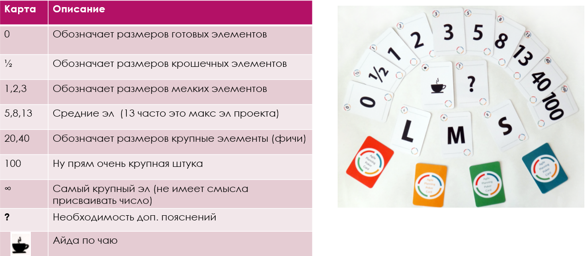

Покер планирование (Planning Poker, Scrum poker) — техника оценки, основанная на достижении договорённости, главным образом используемая для оценки сложности предстоящей работы или относительного объёма решаемых задач при разработке программного обеспечения.
Цель – подстёгивает команду к обсуждению проекта и приходу к общему мнению.
